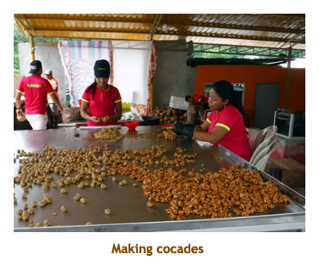
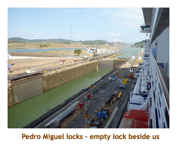
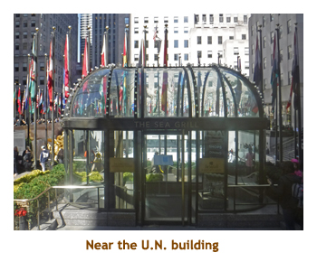

[ Home ] [ Travel ] [ Photography ] [ Pets ] [ Games] [ Rowing] [ Physics ]


Cruising on the Oceania Marina
Travel
Cruises
Past Cruises (Diaries)
Future Cruises
Rogues Galleries
Land Trips
Diaries (Land Trips)
Hawai'i - Big Island - 04'01
Hawai'i - Maui - 05'02
Hawai'i - Big Island - 04'03
Hawai'i - Kaua'i - 09'04
Hawai'i - Big Island - 04'06
Hawai'i - Maui - 04'06
Mainland China - 05'07
Phoenix, Arizona - 12'07
Greek Isles - 05'08
Hawai'i - Kaua'i - 09'08
Hawai'i - Big Island - 09'09
Hawai'i - Maui - 05'12
Hawai'i - Big Island - 04'13
Ireland - 08'13
Mexico - Cancun 11'13
France/Belgium/Lux 07'15
Hawai'i - Big Island - 05'17
England / Wales - 06'17
Hawai'i - Big Island - 09'19
Photography
Cameras
Underwater
Pets
Tara
Blackie
Whitey
Muffy
Ollie
Rusty
Fluffy
Rufus&Dufus
Games
Rowing
Physics
Rating (out of 5):
Ship  Food
Service
Itinerary
Food
Service
Itinerary
We booked this cruise for a number of reasons. We had done the Panama Canal less then 18 months ago on the Island Princess, but this cruise extended the normal canal itinerary of LA / Miami to Lima, Peru / New York City, making it an 18 day cruise. It was also our favorite ship (Marina) on one of our favorite cruise lines (Oceania). And, of course, it was on the list of available T/A priced cruises. Another bonus was that it checked off two more countries for us - Peru and Guatemala. The only bad part of the trip was the flight to Lima. It was split over two legs - Calgary to Montreal to Lima - with a total of 12 hours flying time. We find as we get older the longer flights bother us more. At least the flight home would be tolerable at 5 hours from New Jersey to Calgary.
The ship was not full. There were 1066 passengers whereas the double occupancy limit was 1250. About 150 of the passengers were already aboard from the previous Easter Island cruise , making it a 32 day cruise. The previous leg was even less crowded with only about 900 guests. There were only 2 children on our cruise - definitely an old peoples cruise! Choosing clothes to bring was complicated as it was (end of) summer in South America, hot in the Panama area and the Caribbean, and early Spring on the northeast US coast. One big plus of this cruise was that there was no great time zone change. In fact, the first half of the cruise was on Alberta time.
A first for us was an abnormal outbreak of a bacterial based gastro-enteritis that was sufficiently widespread to require extreme sanitization measures by the crew for several days. The following paragraph is based on what we saw and what we heard, realizing that every employee we heard from had a different set of facts! The outbreak was caused by a bacterial infection. (ie. definitely not Norwalk which is a viral infection). Apparently a number of passengers on a Machu Picchu pre-cruise tour came down with an infection after eating a meal at the same hotel in Cuzco. Even though sick, the passengers still boarded the ship in Lima which started the ball rolling. In support of this theory is that the ship was disease free for the whole of the previous 16 day Easter Island cruise. The infection finally ran its course about two weeks after we boarded. During this time more and more sanitization procedures were put into place. These included:
- hand sanitizer dispensers were placed throughout the ship
- chairs, tables, railings, etc. were regularly wiped clean with disinfectant
- all food was served by employees
- place mats, cutlery, condiments, etc. were placed on the table after being seated
- there were no hard cover menus, just disposable paper menus
- casino cards were trashed after each play
- the "crossing the Equator" celebration was cancelled
- the "staff olympics" event (if it is still an event!) was cancelled
- the library was locked down
- staff in the gym were wiping down the equipment after each usage
- people exhibiting symptoms were confined in their rooms for two days
Trivia was well organized on this cruise with two sessions of general trivia per day - at 4:30 and 8:30. Teams had a maximum of 8 members, which we have always found too large (6 is perfect). And, of course, the driving force was the accumulation of those much coveted BIG-O Points. We would turn in our points at the end of the cruise for fabulous Oceania paraphenelia like hats, t-shirts and umbrellas. But the true winnings were having fun with and getting to know our new team mates.
Days 1, 2 (Mar 15, 16) - Travel to Lima
 Marjorie was working today, so Christina and I took Rusty to the cat kennel.
Soon after Marjorie arrived home we had a quick dinner, loaded our suitcases
into the car and headed over to Christina and Matt's to drop off the car. We had
a bit of a visit and then headed to the Westin Hotel airport where we turned over
our car to Christina. It was about 8 PM and our wakeup call would come at 5 AM.
We toured the hotel before heading to bed. We awoke at 5 AM and shuttled to the
airport to check in to our 4 hour flight to Montreal. We were ontime and landed
at YUL about 12:30. We had plenty of time for lunch at YUL as our next leg (to Lima)
left at 6 PM. Once again we were ontime and landed at Lima (8 hours later) at
1:30 AM. A cab was waiting to drive us to the Swissotel in San Isidro - a suburb
of Lima City. By the time
we hit the sack it was 3 AM. We were ready for a day in Lima.
Marjorie was working today, so Christina and I took Rusty to the cat kennel.
Soon after Marjorie arrived home we had a quick dinner, loaded our suitcases
into the car and headed over to Christina and Matt's to drop off the car. We had
a bit of a visit and then headed to the Westin Hotel airport where we turned over
our car to Christina. It was about 8 PM and our wakeup call would come at 5 AM.
We toured the hotel before heading to bed. We awoke at 5 AM and shuttled to the
airport to check in to our 4 hour flight to Montreal. We were ontime and landed
at YUL about 12:30. We had plenty of time for lunch at YUL as our next leg (to Lima)
left at 6 PM. Once again we were ontime and landed at Lima (8 hours later) at
1:30 AM. A cab was waiting to drive us to the Swissotel in San Isidro - a suburb
of Lima City. By the time
we hit the sack it was 3 AM. We were ready for a day in Lima.
Days 3, 4 (Mar 17, 18) - A day in Lima, then boarding

|
Day 5 (Mar 19) - Salaverry (for Trujillo)
 We were up at 8:00 AM ready for our first port stop. We were in the industrial port of Salaverry.
We had breakfast in the buffet and then split up for the morning. Marjorie was doing a ship's
tour while I went to the gym and then read for a while. Marjorie's tour was a bus trip to the city
of Trujillo, visiting a colonial house, the town square and the archaeological museum.I had
lunch in Waves and then wandered and read until Marjorie returned at 3:00 PM. Our first
trivia session was at 4:30, and we joined up with some others to form a team for the cruise. We
were rewarded for choosing team mates well by achieving a second place finish. For the
remainder of the cruise we did very well. Immediately following afternoon trivia, there was a session
to review answers to a daily Mensa quiz that we could work on throughout the day. Easy
BIG-O Points. For dinner we scrounged our way into Toscana.
Marjorie had a pasta trio, while I had roast beef ravioli. Yummy! After dinner we hustled to
the 8:30 evening triva. It was a different crowd than the afternoon crowd, so we ended up
forming a new team for evening trivia. As we looked about for new team members, who
should we find but Marlene and Bill - our Calgarian trivia buddies from the Easter Island
cruise 7 years ago. We had lost contact with them so it was a pleasant surprise to renew
our aquaintance. Once again we were wise in our choice of team mates as we were well
rewarded at the evening sessions as well. So, we wandered the ship for a while and then went to bed.
We were up at 8:00 AM ready for our first port stop. We were in the industrial port of Salaverry.
We had breakfast in the buffet and then split up for the morning. Marjorie was doing a ship's
tour while I went to the gym and then read for a while. Marjorie's tour was a bus trip to the city
of Trujillo, visiting a colonial house, the town square and the archaeological museum.I had
lunch in Waves and then wandered and read until Marjorie returned at 3:00 PM. Our first
trivia session was at 4:30, and we joined up with some others to form a team for the cruise. We
were rewarded for choosing team mates well by achieving a second place finish. For the
remainder of the cruise we did very well. Immediately following afternoon trivia, there was a session
to review answers to a daily Mensa quiz that we could work on throughout the day. Easy
BIG-O Points. For dinner we scrounged our way into Toscana.
Marjorie had a pasta trio, while I had roast beef ravioli. Yummy! After dinner we hustled to
the 8:30 evening triva. It was a different crowd than the afternoon crowd, so we ended up
forming a new team for evening trivia. As we looked about for new team members, who
should we find but Marlene and Bill - our Calgarian trivia buddies from the Easter Island
cruise 7 years ago. We had lost contact with them so it was a pleasant surprise to renew
our aquaintance. Once again we were wise in our choice of team mates as we were well
rewarded at the evening sessions as well. So, we wandered the ship for a while and then went to bed.
Days 6, 7 (Mar 20, 21) - A day at sea, then Manta, Ecuador
Day 7: We were up at 7:00 to watch us dock in Manta. There were
no excursions that interested us so we stayed aboard for the morning. We did
breakfast at the buffet, then I went to the gym while Marjorie headed to the computer
room to do her T/A business. We had lunch at waves. In the afternoon we decided
to take the free ship-to-town shuttle to see the town. Where the shuttle stopped
there was a craft market, where every second stall sold Panama hats. We
wandered the market for half an hour or so and then caught the shuttle back to
the ship. Were were back in time for trivia and Mensa review. For dinner we went to Jacques
where both Marjorie and I had the lobster thermadore. We placed second at evening
trivia.
Day 8 (Mar 22) - A day in Esmeraldas, Ecuador
|  |
Day 9, 10 (Mar 23, 24) - A sea day and a canal day
Day 10: This morning we were up at 6:30 to see us enter the Panama Canal. This was our third time
transiting the locks over the years so it was more of an interesting experience rather than an
educational one. One difference I noticed this time was that there weren't many ships transiting with us.
The previous times ships were stacked up at either end of the canal, plus in Lake Gatun. The locks
hold two ships side-by-side, and we always had a partner ship blocking the view on one side. This
time there were fewer ships waiting and no one beside us in the lock. We had breakfast in the buffet
then I went to the gym and Marjorie to shuffleboard. We had lunch at waves In the afternoon we
played Top Toss for BIG-O Points and managed 4:30 trivia. For
dinner we snuck into Red Ginger. Marjorie had a chicken stir fry while I had the miso sea bass.
8:30 trivia did us in, so a quick wander and to bed. Clocks back 1 hour.
|  |
Day 11 (Mar 25) - Puerto Limon, Costa Rica
 We were up at 7:00 to cool and rainy weather. This was our second visit to
Puerto Limon and we had arranged a jungle boat tour. We had breakfast
in the buffet. By the time it rolled around to our 9:00 tour, the rain had stopped
and it was quite nice out. We were bused to the Tortuguero Canal to board a
river boat. The boat went at a leisurely pace and stopped when animals or birds
were spotted. We saw sloths, howler monkeys, caimen, iguanas and lizards,
and many species of water birds. After the boat cruise we were hosted on shore
with pineapple, bananas, juices, beer. Then it was back to the ship by 12:15.
We did lunch at Waves. After lunch we wandered back into town to find a
grocery store (Mercado). We loaded up on cookies and beer (my Peruvian beer had run out).
Back on board I did my bit at the gym then hustled to afternoon trivia. Dinner was at Jacques
where Marjorie had some kind of seafood and I had coq st jacques. Very good!
We finished the day with evening trivia and our nightly wander.
We were up at 7:00 to cool and rainy weather. This was our second visit to
Puerto Limon and we had arranged a jungle boat tour. We had breakfast
in the buffet. By the time it rolled around to our 9:00 tour, the rain had stopped
and it was quite nice out. We were bused to the Tortuguero Canal to board a
river boat. The boat went at a leisurely pace and stopped when animals or birds
were spotted. We saw sloths, howler monkeys, caimen, iguanas and lizards,
and many species of water birds. After the boat cruise we were hosted on shore
with pineapple, bananas, juices, beer. Then it was back to the ship by 12:15.
We did lunch at Waves. After lunch we wandered back into town to find a
grocery store (Mercado). We loaded up on cookies and beer (my Peruvian beer had run out).
Back on board I did my bit at the gym then hustled to afternoon trivia. Dinner was at Jacques
where Marjorie had some kind of seafood and I had coq st jacques. Very good!
We finished the day with evening trivia and our nightly wander.
Days 12, 13 (Mar 26, 27) - A day at sea, a day in Guatemala


Day 13: We were up at 7:00 ready for our day in Santo Tomaso, Guatemala. This
would be a new country for us. Just like in Puerto Limon is was raining hard as we got up, but by
the time we got to the buses it was bright and sunny. We had our breakfast in the buffet and
then got ready for our 9:15 tour. We assembled on the dock and then walked to the buses.
We drove to a village where the Rio Dulce flows into Lake Izabal. We loaded into motor boats
to tour around Lake Izabal. We made a stop at Castille de San Felipe - built during the 17th century
in honour of the Spanish King Felipe II. We got to walk through the beautiful grassy parkland and
then entered the castle for a tour. The castle was small, but very interesting. After the tour and
a return walk through the park we reboarded the boats and continued our tour of the lake. We slowly
circled a small island where the trees were full of water birds - pelicans, cormorants, etc. Back on
land, we went to the Catamaran Hotel for refreshments. We were back at the ship by 3:00. I went
to the gym (empty!) and then we played afternoon trivia. We did dinner in Toscana where Marjorie
had lasagne and I had a lobster tail. Wonderful. Afterwards we did the evening trivia, wandered
and went to bed.
Day14 (Mar 28) - Fourth time in Roatan
 We rose today about 7:00 AM to find ourselves in Roatan (Honduras) for the fourth time.
Due to several other cruise ships also in Roatan harbour, the docks were full and
our ship would be tendering. What a coincidence - the only port of the cruise that was
tendering was the one where we had no interest (or reason) for going ashore. So,
we put on our sea day clothes and headed off to the buffet for breakfast. With
most of the passengers on shore for the day, we had the ship to ourselves.
After breakfast Marjorie headed up to the shuffleboard area while I went to the gym
(totally empty). We did our usual lunch at Waves (surf and turf "burger" and a
chocolate milkshake). We wandered and read, squeezing in a game of Top Toss
and afternoon trivia. We were back to the Red Ginger for dinner. Marjorie had the
miso sea bass while I had the scallop trio. After dinner we did the 8:30 trivia. Later on,
after we had gone to bed I had an upset stomach which kept me up all night. The
doctor insisted it was food poising and not related to the bacterial infection going around
the ship.
We rose today about 7:00 AM to find ourselves in Roatan (Honduras) for the fourth time.
Due to several other cruise ships also in Roatan harbour, the docks were full and
our ship would be tendering. What a coincidence - the only port of the cruise that was
tendering was the one where we had no interest (or reason) for going ashore. So,
we put on our sea day clothes and headed off to the buffet for breakfast. With
most of the passengers on shore for the day, we had the ship to ourselves.
After breakfast Marjorie headed up to the shuffleboard area while I went to the gym
(totally empty). We did our usual lunch at Waves (surf and turf "burger" and a
chocolate milkshake). We wandered and read, squeezing in a game of Top Toss
and afternoon trivia. We were back to the Red Ginger for dinner. Marjorie had the
miso sea bass while I had the scallop trio. After dinner we did the 8:30 trivia. Later on,
after we had gone to bed I had an upset stomach which kept me up all night. The
doctor insisted it was food poising and not related to the bacterial infection going around
the ship.
Day15 (Mar 29) - Recouperating in Belize
Day16 (Mar 30) - Checking out Costa Maya
We were up around 7:00 and ate breakfast in the buffet. We were docking in Costa Maya. We had been here several times over the years and it has really developed. On our first visit there was nothing there, just a pier and jungle. Dave and I did a bicycle tour along a gravel road and into a small village of wooden huts. Now it is a fully developed cruise shopping plaza. I wonder if the small villages are still around. Anyway, it was very hot so we did a quick tour of the plaza. We were back on the ship again in time for lunch at Waves. We relaxed and read on our balcony, interspersed with Top Toss and trivia. We decided to have dinner at the buffet so had a variety of items. We did evening trivia and then did our usual walk on the uppper deck. Clocks ahead 1 hour tonight.
 |
Days 17, 18 (Mar 31, Apr 1) - Another sea day and Miami
Day 18: The next day we were up at 7:30 to watch us come into Miami.
We had a quick breakfast in the buffet. This was our first U.S. port so
we all had to march out to the terminal building to go through US Customs.
We didn't have any excursion booked for Miami, so we caught the free shuttle
bus to downtown. We exited the bus at the Brickell Center (about 9:30) and
wandered around the huge mall. Then we caught the shuttle to the Bayside
Mall about 11:00. Marjorie decided to leave the bus and tour the mall, while
I stayed on the bus and headed back to the ship. Marjorie arrived at the
ship on a later shuttle (12:00). We had lunch in the buffet. The afternoon
was straight forward with Top Toss and trivia. We enjoyed watching the
ship fill with gas (several hours) from our balcony, plus the galley loaded
up with pallets of fruits and veggies. Dinner was in Toscana. Marjorie had
a veal cutlet, I had veal scalopini. Then 8:30 trivia, wander the decks
and then to bed. Note: at some time in the afternoon the captain
announced that due to an Atlantic storm we would be bypassing Norfolk, Virginia.
Instead we would dock tomorrow at Port Canaveral and then have a sea day
to New York. That's twice now that we have missed Norfolk! We are destined
to never visit Norfolk!
Day 19 (Apr 2) - A day in Port Canaveral
Day 20 (Apr 3) - Final day at sea
Day 21 (Apr 4) - A day in New York City
|  |
Day 22 (Apr 5) - Disembarking and home